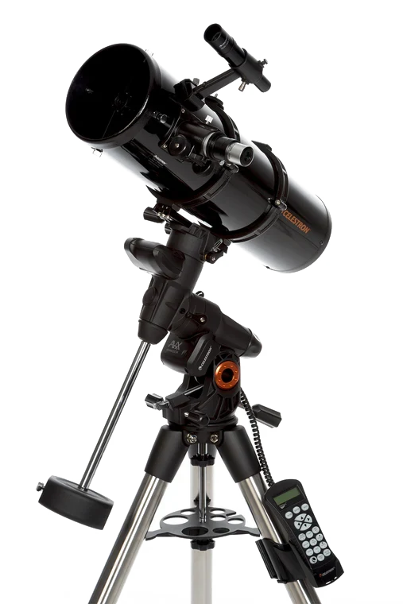

Requirement-led search
Choose environmental targets and scan a land-only, approximately 15 km equal-area grid for ranked cells. Results are computed in a browser Web Worker.
Describe the surface conditions you need. Otherworld Atlas searches 575,482 source-covered land tiles on an approximately 15 km equal-area grid and brings the closest candidates to the globe—right in your browser.
Every result is tied to measurable grid values and cited source data. Candidates are starting points for field research, not a substitute for engineering qualification or artificial testing.
One lightweight, explainable workflow for exploring Earth environments as Moon and Mars analogs.
Choose environmental targets and scan a land-only, approximately 15 km equal-area grid for ranked cells. Results are computed in a browser Web Worker.
Review candidate coordinates on a 3D Earth and open locations in a map for further terrain inspection.
Use the rover visual reference to review which environmental inputs the current grid supports and which still require engineering tests.
Climate, elevation, grid resolution, formulas and data limitations are shown so users can judge what a match does—and does not—mean.
Review the code, data-preparation workflow and documented assumptions.
You do not need a GIS background to try a search. Follow these steps, then treat the results as candidates to investigate.
This sets the exploration context. It does not imply Earth can reproduce the full off-world environment.
Adjust mean temperature, elevation, slope and aridity. These are target values for a similarity search, not hard safety constraints.
A background worker scores 575,482 source-covered land cells at approximately 15 km equal-area resolution and returns the 20 best candidates without blocking the interface.
Choose a ranked result or globe marker to focus the map. A 15 km cell is broad regional context—not a rover traversability map.
Use the rover sandbox as a discussion aid. Evaluate wheel traction, dust, thermal-vacuum, power and communications behavior with mission-specific analysis and dedicated test rigs.
The grid candidates are ranked from your latest four-field scan. Below them, browse named, source-linked Moon and Mars reference profiles; those profiles are not grid results and do not affect ranking.
These are ranked cells from the current approximately 15 km equal-area Earth grid, not a preset catalog. Their rank is a screening result, not independent site validation or a mission recommendation.
A 2° × 2° neighborhood T2M climatology for one candidate from the latest scan. NASA's regional API requires a bounding box and allows one parameter per request. This is not a global grid and does not change candidate ranking.
Run a scan and choose a candidate first.
Named extraterrestrial references from the supplied research workbooks. Browse 20 names at a time; these are source-linked references, not verified Earth analog matches and not global-scan results.
Loading cited reference profiles…
NASA's October 28, 2024 release lists these regions in no priority order. These are candidate areas, not selected landing sites. NASA's public release gives no machine-readable coordinates or boundaries, so this app does not invent per-region measurements.
Moon mode currently has no NASA lunar raster in the active search. The curated profile picker shows only source-linked lunar fields marked measured in the supplied workbook; these are context only, not a lunar grid.
NASA's 2024 candidate-region update ↗ NASA PGDA LOLA South Pole terrain product 90 ↗ Diviner PDS Polar Cumulative Products ↗The worker computes a normalized absolute difference for active temperature, elevation, slope and aridity fields, using each field's 5th-to-95th percentile spread in this dataset. User weights determine each field's share; zero excludes a field. The weighted distance is mapped to a 0–100 relative score with 100 ÷ (1 + distance), so even distant targets retain a meaningful rank.
The score is relative to this dataset and formula. It is not a probability, hardware qualification score, or claim that a location reproduces lunar or Martian conditions.
TerraClimate dataset citation and limitations ↗ WorldClim 2.1 ↗Loading active grid metadata…

Bengaluru, Karnataka
Mumbai, Maharashtra
Faridabad, Haryana
Mumbai, Maharashtra
Mumbai, Maharashtra
Faridabad, Haryana
Compare measurable Earth-grid conditions with published Perseverance design facts. The 3D model is a visual aid; the comparisons are context, not rover qualification or a mission-performance prediction.
Explore how a multimodal model connects lunar surface imagery, terrain and illumination data. Choose a sample tile in the live demo, provide input modalities and generate a held-out modality.
Select an official sample, choose the modalities to condition on, then ask the model to generate a held-out modality. The hosted demo also compares its output with the original and tokenizer reconstruction.
If the embedded demo does not load, open it directly on Hugging Face ↗.
The model works with co-registered LRO imagery and terrain products, including wide-angle and narrow-angle observations.
This is a qualitative research probe, not a calibrated scientific product. Generated fields have no geodetic reference frame and must not be used for mission planning or quantitative decisions.